| Home | All Classes | Main Classes | Annotated | Grouped Classes | Functions |
[Prev: Reference: Toolbar Buttons] [Home] [Next: Reference: Wizards]
This chapter describes and explains every Qt Designer dialog.
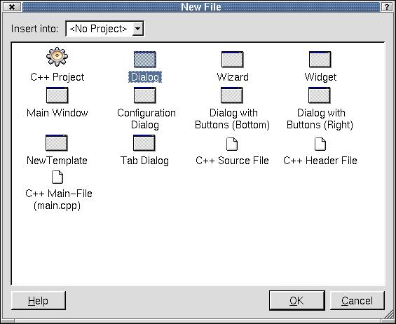
New File Dialog
Click File|New (or press Ctrl+N) to invoke the New File dialog. This dialog offers four kinds of file to choose from: C++ Project, Forms, Source files, and Main files.
The 'Insert Into' drop-down combobox lists the open projects, defaulting to the current project. New files are added to the project displayed in this combobox. To add a new file to a different project, choose the project you want to use in the 'Insert Into' combobox.
The 'Dialog' file type is highlighted by default when the New File dialog pops up. Click on the file type you want to use and click OK to create it. Click Cancel to leave the dialog without creating a new file. Note that if you select C++ Project, the 'Insert Into' combobox will be disabled, since it is not possible to insert a new C++ Project into an existing project.
Click C++ Project to start a new project. This option invokes the Project Settings Dialog. C++ projects are saved as .pro files, which include the information Qt Designer needs to manage projects. When you add a form to your project in Qt Designer, it is automatically added to the FORMS section of the project file. The .pro file contains the list of forms (.ui files) used in the project. Qt Designer reads and writes .ui files, e.g. form.ui. The uic (user interface compiler) creates both a header file, e.g. form.h, and an implementation file, e.g. form.cpp, from the .ui file.
Click Dialog to create a plain dialog form. Typically, this type of form is used to present the user with configuration options, or to present related sets of choices, for example, printer setting dialogs and find and replace dialogs.
Click Wizard to create a wizard form. A wizard is a special type of input dialog that consists of a sequence of dialog pages. A wizard's purpose is to assist a user by automating a task by walking the user through the process step by step. Wizards are useful for complex or infrequently occurring tasks that people may find difficult to learn or do. Initially the wizard form consists of a single dialog page. Use the right click context menu to add additional pages and to change page titles.
Click Widget to create a form whose superclass is QWidget rather than QDialog.
Click Main Window to invoke the Main Window Wizard. This wizard is used to create actions, menu options and toolbars through which the user can invoke actions. This form is used to create typical main-window style applications.
Click Configuration Dialog creates a form with a listbox on the left, and a tabwidget filling the body of the form, along with Help, OK and Cancel buttons.
The Dialog with Buttons (Bottom) form is a template with default buttons at the bottom of the form.
The Dialog with Buttons (Right) form is a template with default buttons at the right of the form.
The Tab Dialog form has a tab widget as its central widget, along with Help, OK and Cancel buttons along the bottom.
Click C++ Source File to create a new empty C++ file. The file will automatically be added to the project when it is saved.
Click C++ Header File to create a new empty C++ header file. The file will automatically be added to the project when it is saved.
Click C++ Main File to invoke the Configure Main-File Dialog which will create a basic main.cpp file automatically.
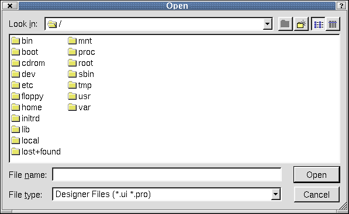
File Open Dialog
Click File|Open (or pressCtrl+O) to invoke the Open dialog. Use this dialog to open existing files.
The Open dialog shows the current directory and default file type. To choose a different directory, click the 'Look In' combobox. Choose a file and the name will appear in the 'File Name' combobox. To choose a different file type, click the 'File Type' combobox. Click the 'Create New Folder' toolbar button to create a new directory. Click the 'List View' toolbar button to view folders and files in a list with only the names showing. Click the 'Details' toolbar button to view the folders and file names along with their size, type, date, and attributes. Click the Size, Type, Date, or Attributes column headers to sort the folders or files.
Click Open to open the selected file. Click Cancel to leave the dialog without opening a new file.
Note: For Windows, the System File Dialogs are used.

Save As
Click File|Save As to invoke the Save As dialog. Use this dialog to save files to a directory.
The Save As dialog shows the current directory and default file type. To choose a different directory, click the 'Look In' combobox. Choose a file and the name will appear in the 'File Name' combobox. To choose a different file type, click the 'File Type'combobox. Click the 'Create New Folder' toolbar button to create a new directory. Click the 'List View' toolbar button to view folders and files in a list with only the names showing. Click the 'Details' toolbar button to view the folders and file names along with their size, type, date, and attributes. Click the Size, Type, Date, or Attributes column headers to sort the folders or files.
Click Save to save the selected file. Click Cancel to leave the dialog without saving the file.
Note: For Windows, the System File Dialogs are used.
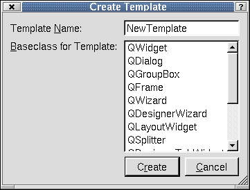
Create Template
Click File|Create Template to invoke the Create Template dialog. Use this dialog to create templates.
The 'Template Name' line edit defaults to 'New Template'. To change the name to a different name, type it in the line edit. Click the 'Baseclass for Template' scroll bar to choose a base class for the template.
Click Create to create the template. Click Cancel to leave the dialog without creating a template.
If you create a template it will appear in the New File Dialog. Templates are useful when you have to produce a large number of similar forms, or where you want to 'brand' your forms.
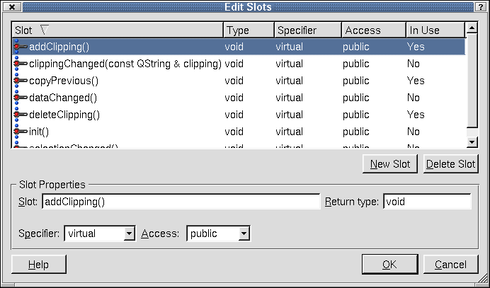
Edit Slots
Click Edit|Slots to invoke the Edit Slots dialog. Use this dialog to edit or create slots which are used in conjunction with signals to provide communication between objects.
When this dialog is invoked, all existing slots are shown in the 'Slot' listbox. The column headers Slot, Type, Specifier, Access, and In-Use provide details about each slot that is listed. Click on any of the column headers to sort the slots. To create a new slot, click the New Slot button. The new slot has a default name that you should replace by typing the new name in the 'Slot' line edit. The 'Return Type' is also a default that can be changed by typing in the line edit. To change the 'Specifier' or 'Access', click the combobox and choose the required specifier or access. To remove a slot, click the slot you want to delete, and then click the Delete Slot button.
Click OK to save all changes made to slots. Click Cancel to leave the dialog without making any changes to slots.
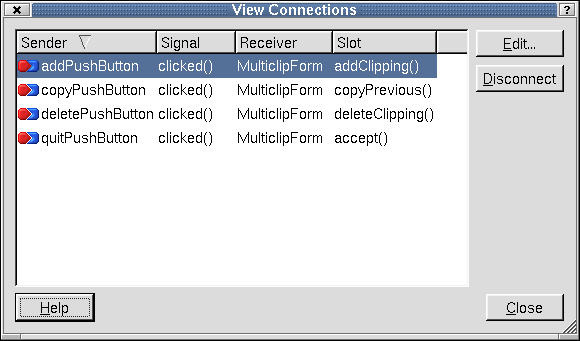
View Connections
Click Edit|Connections to invoke the View Connections dialog. This dialog displays the current signals and slots connections.
When this dialog is invoked, all existing connections are shown in the listbox. The column headers Sender, Signal, Receiver, and Slot provide details about each connection. Click the column headers to sort the connections. To remove a connection from the listbox, click the connection you want to disconnect and then click Disconnect. To edit a connection, click the Edit... button to invoke the Edit Connections Dialog.
Changes made in this dialog take immediate effect. Click the Close button to leave the dialog.
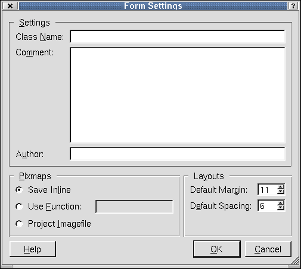
Form Settings
Click Edit|Form Settings to invoke the Form Settings dialog. Use this dialog to save the form's settings, pixmap, and layout properties.
In the Settings section, you can change or add the name of the class that will be created by typing in the 'Class Name' line edit. Note that the default name is the form name, but it can be changed. You can also enter text to the 'Comment' and 'Author' line edits or leave them blank, since they are not required.
The default (for projects) is 'Project Imagefile'. This is the recommended option. Images are handled automatically, with Qt Designer storing the images in a subdirectory, and uic producing code that contains the images and the necessary supporting code. Each image is stored just once, no matter how many forms it is used in.
If you do not want Qt Designer to handle the images, (or are not using a project) choose either 'Save Inline' or 'Use Function'. 'Save Inline' saves the pixmaps in the .ui files. The disadvantage of this approach is that it stores images in the forms in which they're used, meaning that images cannot be shared across forms. Click 'Use Function' to use your own icon-loader function for loading pixmaps. Type the function's name (with no signature) in the 'Use Function' line edit. This function will be used in the generated code for loading pixmaps. Your function will be called with the text you put in the pixmap property (e.g. the image name) whenever an image is required.
Click the 'Default Margin' spinbox or the 'Default Spacing' spinbox to change the default layout of the current form.
Click OK to accept changes to the form settings. Click Cancel to leave the dialog without making any changes.
Click Edit|Preferences to invoke the Preferences dialog. This dialog has a tab for 'General' preferences. If you have the C++ Editor plugin, the dialog will also have a tab for the C++ Editor.
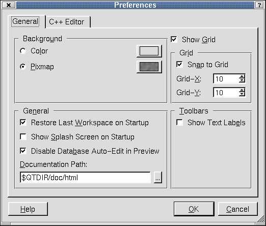
Preferences- General Tab
The 'General' tab has sections for Background, Grid, General, and Toolbars.
The Background section defaults to 'Pixmap'. To change the default, click the Select a Pixmap button next to the 'Pixmap' radio button to invoke the Choose a Pixmap... Dialog. Click the 'Color' radio button to change the background to a color instead of a pixmap. Click the Choose a Color button located to the right of the 'Color' radio button to invoke the Select Color Dialog.
The 'General' section of the General tab has three checkboxes that are checked by default. Click the 'Restore last workspace on startup' checkbox to save the size and positions of the windows and toolbars of Qt Designer. The next time you start up Qt Designer, the windows and toolbars are restored to their last positions. Click the 'Show Splash Screen on startup' checkbox to display the Qt Designer splash screen when you start up the application. Click the 'Disable Database Auto-Edit in Preview' checkbox to disable the ability to update or delete data in the database to which you are connected when working with database widgets. To change the path Qt Designer uses to find it's online documentation, click the 'Documentation Path' line edit and type a new path. It would be unlikely to have to change this path. Another way to change the path is to click the (ellipsis) button located to the right of the line edit. This invokes the Find Directory Dialog.
The 'Grid' section has options for customizing the grid on the form. The 'Show Grid' checkbox located above the 'Grid' section is checked by default. Developers using Qt Designer almost always use Qt's layouts to design their forms and rarely make any use of the grid. The grid is provided for the rare occasions when a form is created using widgets with fixed sizes and positions. When 'Show Grid' is checked, you can customize the grid's appearance. When it is unchecked, the 'Grid' section is disabled. The 'Snap to Grid' checkbox is also checked by default. When it is checked, widgets are placed on a dot (snap to the grid) using the X|Y resolution. When it is unchecked, the 'Grid-X' and 'Grid-Y' spin boxes are disabled. Click the 'Grid X' and 'Grid Y' spinboxes to customize the grid settings for all forms.
The 'Toolbars' section has a 'Show Text Labels' checkbox. Click the checkbox to display the text labels for each icon shown in the Qt Designer toolbar.
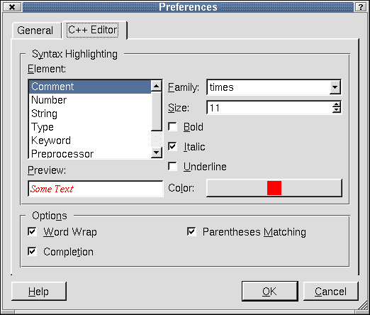
Preferences- C++ Editor Tab
The C++ Editor tab provides options for customizing the editor. The 'Syntax Highlighting' section lets you change the way the syntax is viewed in the editor. Click the 'Element' listbox and choose an element. Click the 'Family' listbox to change the font style for that element. Click the 'Size' spinbox to choose a font size. You can change the font to Bold, Italic, or Underline by clicking the corresponding checkbox. Note, that all the fonts used derive from the 'Standard' element, so if you want to change the font used for everything, change the 'Standard' element. Click the Color button to invoke the Select Color Dialog. As you make changes to each element, you can view the changes in the 'Preview' line edit.
The 'Options' section has the Wordwrap, Completion, and Parentheses Matching checkboxes checked by default. Click the checkboxes to de-select them.
Click OK to accept changes to Preferences dialog. Click Cancel to leave the dialog without making any changes.
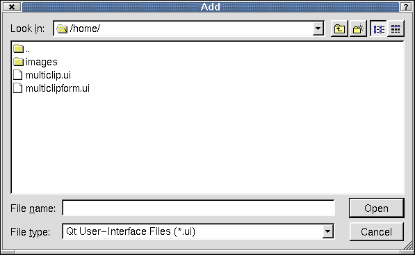
Add Dialog
Click Project|Add File to invoke the Add dialog. Use this dialog to add files to the current project.
The Add dialog defaults the directory and file type. To choose a different directory, click the 'Look In' combobox. Choose a file and the name will appear in the 'File Name' combobox. To choose a different file type, click the 'File Type' combobox. Click the 'Create New Folder' toolbar button to create a new directory. Click the 'List View' toolbar button to view folders and files in a list with only the names showing. Click the 'Details' toolbar button to view the folders and file names along with their size, type, date, and attributes. Click the Size, Type, Date, or Attributes column headers to sort the folders or files.
Click Open to open the selected file. Click Cancel to leave the dialog without opening a file.
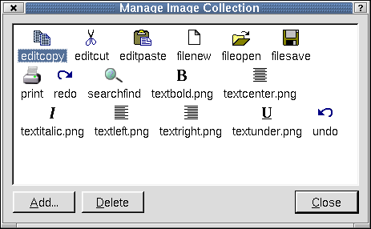
Manage Image Collection
Click Project|Image Collection to invoke the Manage Image Collection Dialog. Use this dialog to view the project's images, add new images, or delete images.
To add an image, click the Add button to invoke the Choose Images... Dialog. To delete an image from from the iconview, click the image and then click the Delete button.
Changes made to the image collection are applied immediately. Click the Close button to leave the dialog.
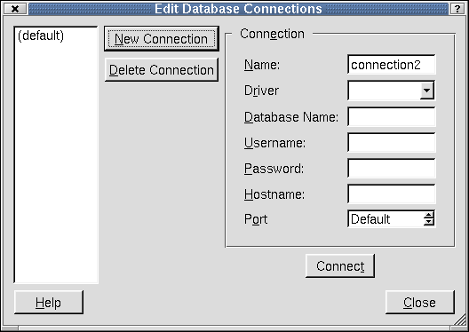
Edit Database Connections
Click Project|Database Connections to invoke the Edit Database Connections Dialog. Use this dialog to connect your project to a database or to edit the current connections.
Click New Connection to create a new database connection. For applications that use a single database it will probably be most convenient to use the default connection name of '(default)'. If you use more than one database then each one must be given a unique name. A driver must be chosen from the Driver combo box. The database name may be available in the Database Name combo box or may have to be typed in. The database name, username, password and hostname should be provided by your database system administrator. When the Connection information has been completed click Connect. If the connection is made the connection name will appear in the list box on the left hand side of the dialog.
To remove a connection, click the connection in the listbox and then click the Delete Connection button.
Click Close to leave the Database Connections dialog.
Click Project|Project Settings to invoke the Project Settings Dialog. Use this dialog to make changes to the project settings.
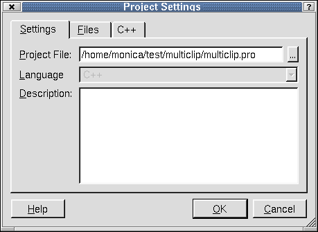
Project Settings- Settings Tab
The 'Settings' tab shows information about the project. The Project File line edit defaults the project name. To change the name, type a new name in the line edit. To save the project, click the (ellipsis) button located next to Project File to invoke the Save As Dialog. The 'Language' combobox is disabled. Click the 'Description' line edit if you want to add additional information about the project.
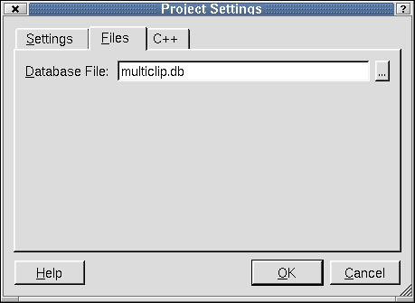
Project Settings- Files Tab
Click the 'Files' tab to enter a name in the 'Database File' line edit. Click the (ellipsis) button to invoke the Save As Dialog.
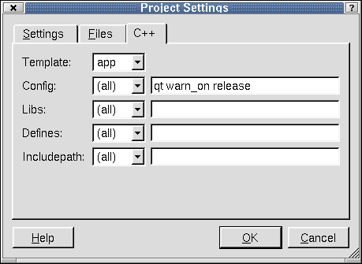
Project Settings- C++ Tab
Click the C++ Tab to change the qmake options. See the qmake documentation for details on what these options mean. Click the 'Template' combobox and choose application or library to create makefiles for building applications or libraries. Click the 'Config' combobox to select the project configuration and compiler options for all platforms, or specific platforms. Type the Config value in the line edit. Note: Unix defaults to a shared library. If you want a shared library in Windows, type 'dll' at the end of the default config command and make sure you select lib from the Template combobox. Click the 'Libs' combobox to select a platform. Type the libraries in the line edit. Click the 'Defines' combobox and select a platform. 'Defines' values are added as compiler pre-processor macros. Type the 'Defines' values in the line edit. Click the 'Includepath' combobox to select a platform. Includepath specifies the directories that should be searched for include files when compiling the project. Type the 'Includepath' values in the line edit.
Cick OK to accept changes to the project settings. Click Cancel to exit the dialog without making any changes to the project settings.
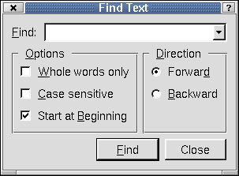
Find Text
Click Search|Find (or press Ctrl+F) to invoke the Find Text Dialog. Use this dialog to find specific text in a project file.
To find the text you want in a file, type the text in the 'Find' combobox. You can make the search more specific by checking any or all of the checkboxes in the 'Options' section. Click the 'Whole words only' checkbox to narrow the search to whole words. Click 'Case Sensitive' to search for text that is identical to the text typed in the combobox. Click 'Start at Beginning' to start the search from the beginning of the file. The 'Direction' section offers the 'Forward' radio button and the 'Backward' radio button to specify the direction to perform the search in the file. Click the Find button to start the search. When the text is found, it is highlighted in the file. Continue clicking Find to search for subsequent occurrences of the search text.
Click the Close button to leave the dialog.
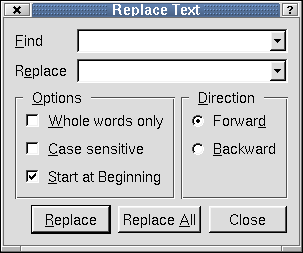
Replace Text
Click Search|Replace (or press Ctrl+R) to invoke the Replace Text Dialog. Use this dialog to replace text in a project file.
To replace text, type the text you would like to replace in the 'Find' combobox. Type the new text in the 'Replace' combobox. You can make the search more specific by checking any or all of the checkboxes in the 'Options' section. Click the 'Whole words only' checkbox to narrow the search to whole words. Click 'Case Sensitive' to search for text that identical to the text you typed in the combobox. Click 'Start at Beginning' to start the search from the beginning of the file. The 'Direction' section offers the 'Forward' radio button and the 'Backward' radio button to specify the direction to perform the search in the file.
Click the Replace button to search and replace the text. When the text is found, it is highlighted in the file. Continue clicking Replace button to search and replace each occurrence of the text in the file. Click Replace All button to replace all occurences of the search text in the file at once.
Click the Close button to leave the dialog.
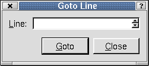
Goto Line
Click Search|Goto line (or press Alt+G) to invoke the Goto Line Dialog. Use this dialog to go to a specific line in the file.
To choose a line number, type the number in the 'Line' spinbox, or click the up and down arrows in the spinbox. Click the Goto button. The cursor is placed at the beginning of the line in the file.
Click the Close button to leave the dialog.
Click Help|About... to invoke the Qt Designer Dialog. This dialog provides information about Qt Designer such as the version, the licensing terms, conditions, and disclaimers.
Click the 'x' located at the top right corner of the dialog to close the dialog.
Click Help|About Qt... to invoke the Qt Designer Dialog. This dialog provides information about Qt.
Click the 'x' located at the title of the dialog to close the dialog.
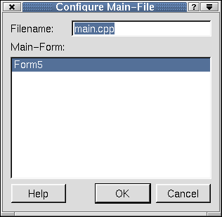
Configure Main-File Dialog
Click File|New|C++ Main-File to invoke the Configure Main-File dialog. Use this dialog to configure the main file and its forms.
To change the default file name, type it in the 'Filename' line edit. Choose the form to use as the application's main form from the line edit by clicking it.
Click OK to accept the configurations and Qt Designer will create a default main.cpp file. Click Cancel to leave the dialog.
Note for database programmers: If you create a main.cpp file using Qt Designer, this file will not include the createConnections() function. We do not include this function because it needs the username and password for the database connection, and you may prefer to handle these differently from our simple example function. As a result, applications that preview correctly in Qt Designer will not run unless you implement your own database connections function.
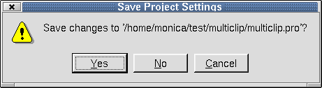
Save Project Settings
The Save Project Settings message box is invoked by clicking File|Close or File|Exit for an open project with unsaved changes. The dialog displays the text 'Save changes to your project.pro'?. Click Yes to save the changes. If the project has any forms with unsaved changes, the Save Form As dialog is invoked when you click Yes. Click No to close the project without saving any changes. Click Cancel to leave the dialog without closing the project and without making any changes.
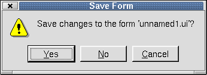
Save Form
The Save Form message is invoked in several ways. One way is to click File|Close for a form that has never been saved, or has been saved previously but has had changes made to it. The dialog is also invoked by clicking File|Exit for a form that has never been saved, or has been saved previously but has had changes made to it. The dialog displays 'Save Changes to the Form?'. Click Yes to save the form. If the form has not been previously saved, the Save Form As Dialog is invoked. Click No to close the form without saving any changes or without saving the form if it has not been saved previously. Click Cancel to leave the dialog without closing or exiting the form and without saving the form.
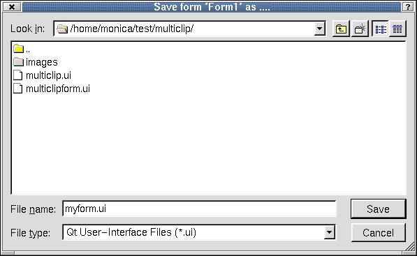
Save Form As Dialog
The Save Form As dialog is invoked in three different ways. One way is to click File|Save for a form in a project that has never saved. Another way to invoke the dialog is by clicking File|Close for a form that has not been previously saved and has had changes made to it. The third way to invoke the dialog is by clicking File|Exit for a form that has not been saved previously or that has been saved but has had changes made to it. File|Close and File|Exit invoke the Save Form Dialog. Click Yes to invoke the Save Form As dialog.
The Save Form As dialog shows the current directory and the default file type. To choose a different directory, click the 'Look In' combobox. Choose a file and the name will appear in the 'File Name' combobox. To choose a different file type, click the 'File Type'combobox. Click the 'Create New Folder' toolbar button to create a new directory. Click the 'List View' toolbar button to view folders and files in a list with only the names showing. Click the 'Details' toolbar button to view the folders and file names along with their size, type, date, and attributes. Click the Size, Type, Date, or Attributes column headers to sort the folders or files.
Click Save to save the selected form. Click Cancel to leave the dialog without saving the form.
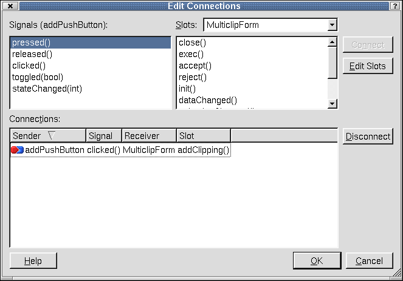
Edit Connections
Invoke the Edit Connections dialog to modify connections between signals and slots.
The top left hand listbox displays the Signals that the widget can emit. The top right combobox lists the form and its widgets. Beneath the combobox is the 'Slots' listbox which shows the slots available in the form or widget displayed in the 'Slots' combobox which are compatible with the highlighted signal. To connect a signal to a slot, choose a signal from the 'Signals' listbox by clicking on it. Then choose a form or widget from the 'Slots' combobox. Choose a slot for the widget or form you select from the listbox. The Connect button will flash and the new connection will appear in the 'Connections' listbox, along with any existing connections. Click the column headers Sender, Signal, Receiver, or Slot to sort the connections. To disconnect an existing connection, choose the connection from the 'Connections' listbox and click the Disconnect button. Click Edit Slots to invoke the Edit Slots Dialog.
Click OK to accept changes to the connections. Click Cancel to leave the dialog without making changes to the connections.
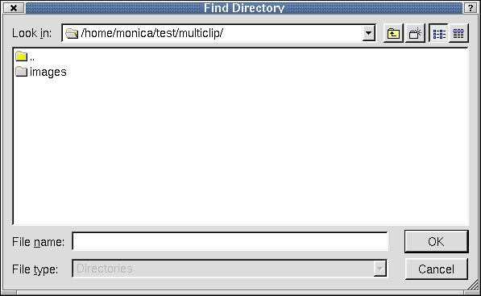
Find Directory
Invoke this dialog to locate a directory.
The Find Directory dialog shows the current directory and the default file type. To choose a different directory, click the 'Look In' combobox. Choose a file and the name will appear in the 'File Name' combobox. To choose a different file type, click the 'File Type' combobox. Click the 'Create New Folder' toolbar button to create a new directory. Click the 'List View' toolbar button to view folders and files in a list with only the names showing. Click the 'Details' toolbar button to view the folders and file names along with their size, type, date, and attributes. Click the Size, Type, Date, or Attributes column headers to sort the folders or files.
Click OK to accept the directory. Click Cancel to leave the dialog without choosing a directory.
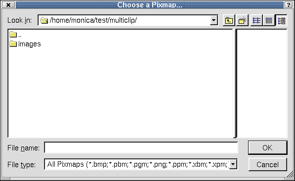
Choose a Pixmap
Invoke this dialog to select a pixmap to use in the current project.
The Choose a Pixmap dialog shows the current directory and the default file type. To choose a different directory, click the 'Look In' combobox. Choose a file and the name will appear in the 'File Name' combobox. To choose a different file type, click the 'File Type'combobox. Click the 'Create New Folder' toolbar button to create a new directory. Click the 'List View' toolbar button to view folders and files in a list with only the names showing. Click the 'Details' toolbar button to view the folders and file names along with their size, type, date, and attributes. Click the Size, Type, Date, or Attributes column headers to sort the folders or files. View a sample of the pixmap file you select in the preview box located on the right side of the dialog.
Click OK to accept the pixmap file. Click Cancel to leave the dialog without choosing a pixmap file.
Invoke this dialog by clicking Tools|Custom|Edit Custom Widgets. Use this dialog to create custom widgets.
Custom widgets are created in code. They may contain a combination of existing widgets but with additional functionality, slots and signals, or they may be written from scratch, or a mixture of both. A custom widget is often a specialization (subclass) of another widget or a combination of widgets working together or a blend of both these approaches. If you simply want a collection of widgets in a particular configuration it is easiest to create them, select them as a group, and copy and paste them as required within Qt Designer. Custom widgets are generally created when you need to add new functionality to existing widgets or groups of widgets. To add create a new widget, click the New Widget button. You will find more information about adding new widgets in the 'Definitions Section'. To load a file which contains descriptions of custom widgets, click the Load Descriptions button. Clicking this button invokes the Open Dialog. To save the descriptions of the listed custom widgets, click the Save Descriptions button, which invokes the Save As Dialog. To delete a widget, click the widget in the listbox and then click the Delete Widget button.
Click Close to leave the Edit Custom Widgets dialog.
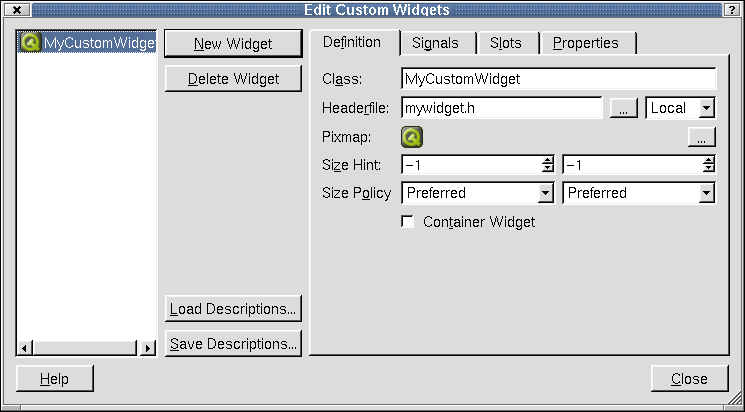
Edit Custom Widgets- Definition Tab
To create a custom widget, click New Widget. Click the Definition tab if you are not already there. You should change the 'Class' name from 'MyCustomWidget' to a unique name by typing in the line edit. Type in the 'Headerfile' line edit to change the name or type the name of a header file you want to use. To search for a saved header file in a directory, click the (ellipsis) button to the right of the Headerfile line edit to invoke the Open Dialog. Click the 'Select Access' combobox to choose how the file will be included. Global include files will be included using angle brackets (<>). Local files will be included using quotation marks. If you have a pixmap that you want to use to identify your widget on the toolbar, click the (ellipsis) button to the right of the 'Pixmap' label. This invokes the Choose a Pixmap Dialog. Click the 'Size Hint' spin boxes to select the recommended size for the widget. If you do not want to have a recommended size, enter -1/-1 in the spinboxes. Click the 'Size Policy' comboboxes to select the vertical size properties of the widget. Click the 'Container Widget' checkbox if the custom widget you are creating should be able to contain other widgets (children).
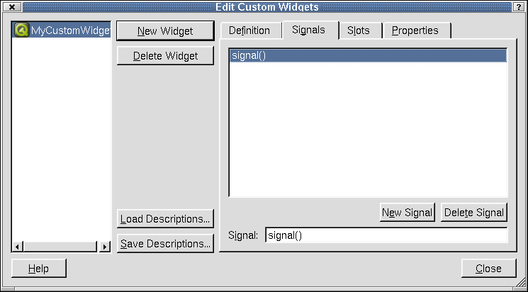
Edit Custom Widgets- Signals Tab
Click the Signals tab to view a list of all the signals the selected custom widget can emit. To add a new signal, click the New Signal button. Click the 'Signal' line edit and provide an argument for the signal and give the signal a unique name. To delete a signal from the listbox, click the signal to choose it and then click the Delete Signal button.
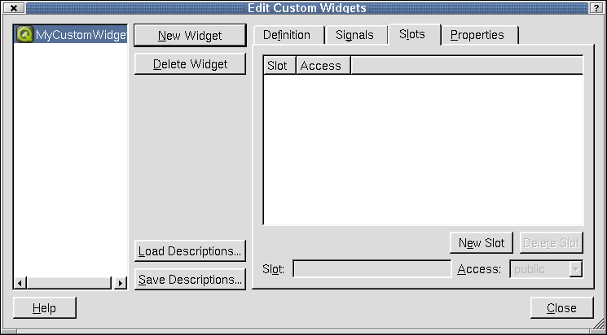
Edit Custom Widgets- Slots Tab
Click the Slots tab to view a list of all the slots for the selected custom widget. Click the 'Slot' or 'Access' cloumn headers to sort the slots in the listbox. To add a slot, click the New Slot button. Click the 'Slot' line edit and provide an argument for the slot and give the slot a unique name. Click the 'Access' combobox to choose between public or protected access for your widget. To delete a slot from the listbox, click the slot and then click Delete Slot.
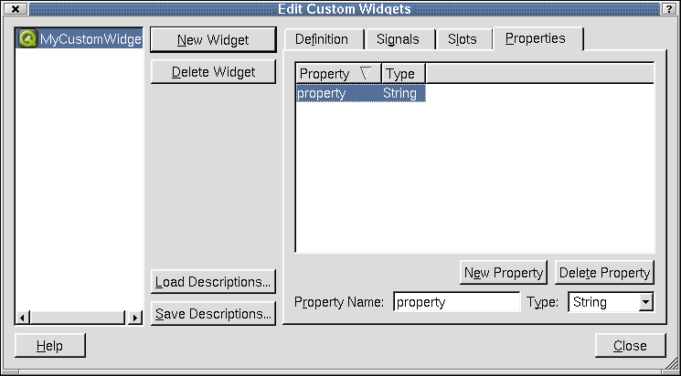
Edit Custom Widgets- Properties Tab
Click the Properties tab to view the list of properties for the selected widget. Click the 'Property' or 'Type' column headers to sort the properties in the listbox. To add a property, click the New Property button. Click the 'Property Name' line edit if you want to change the default name of the property. Note that properties must be implemented in the class using the property system of Qt. To choose a property type, click the 'Type' combobox. To delete a property from the listbox, click the property and then click the Delete Property button.
Click Close to leave the Edit Custom Widgets dialog.
Choose Images
Invoke the Choose Images dialog to choose images to use in a project.
This dialog shows the current the directory and the default file type. To choose a different directory, click the 'Look In' combobox. Choose a file and the name will appear in the 'File Name' combobox. To choose a different file type, click the 'File Type'combobox. As you choose different files, you can preview the images in the window located on the right side of the dialog. Click the 'Create New Folder' toolbar button to create a new directory. Click the 'List View' toolbar button to view folders and files in a list with only the names showing. Click the 'Details' toolbar button to view the folders and file names along with their size, type, date, and attributes. Click the Size, Type, Date, or Attributes column headers to sort the folders or files.
Click Open to open the selected file. Click Cancel to leave the dialog without opening a file.
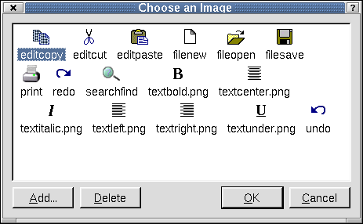
Choose an Image
The Choose an Image dialog is used to choose an image to use for a widget.
To choose an image from the listbox, click the image and then click OK. To add an image, click the Add button to invoke the Choose Images... Dialog. To delete an image, click the image in the listbox and then click the Delete button.
Click Cancel to leave the dialog without making any changes to images.
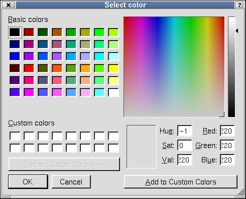
Select Color
The Select Color dialog is used to select color preferences or to create color palettes.
Choose a color from the 'Basic Colors' section and a sample of the color will appear in the small preview box at the bottom of the dialog. To the right of the color sample, you will see line edits that have information about the location of the color in the color spectrum. In addition, the crosshairs in the larger color spectrum window show the location of the color. You can also create a palette of custom colors. There are two ways to do add custom colors. Click a color on the color spectrum window. When the color appears in the small box below the window, click the color and drag it to one of the blank boxes in the 'Custom Color' section of the dialog. You can also click and drag colors from the 'Basic Colors' section. Another way to add colors is to click the Add to Custom Colors when you have chosen a color.
Click OK to accept changes to the Select Color dialog. Click Cancel to exit the dialog without selecting a color or adding custom colors.
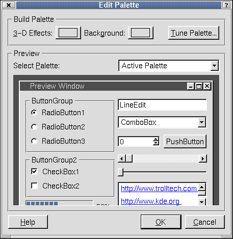
Edit Palette
The Edit Palette dialog is used to change the palette of the current widget or form. You can use a generated palette, or select colors for each color group and each color role. The palette can be tested with different widget layouts in the preview section.
The 'Build Palette' section contains three buttons to help you build the palette. Click the 3-D Effects button to invoke the Select Color Dialog. Click the Background to invoke the Select Color Dialog. Click the Tune Palette button to invoke the Tune Palette Dialog. Click the 'Select Palette' combobox in the 'Preview' section to choose a palette to preview.
Click OK to accept the changes to the palette. Click Cancel to leave the dialog without making changes to the palette.
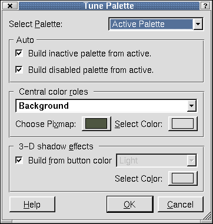
Tune Palette
The Tune Palette dialog is used to choose options for a widget's palette.
Click the 'Select Palette' combobox to choose options for active, inactive, or disabled palettes. If you choose 'Active Palette', the dialog presents three categories used for designing the palette. The categories are the Auto, Central Color Roles, and 3-D Shadow Effects. If you choose 'Inactive Palette' or 'Disabled Palette', all categories are disabled except 'Auto'. Click the 'Auto' section checkboxes to build the inactive or disabled palettes from the active palette. For an active palette, click the 'Central color roles' combobox to select a color role for the palette. Click the Choose Pixmap button to invoke the Choose a Pixmap Dialog. Click the Select Color button to invoke the Select Color Dialog. Check the 'Build from button color' checkbox in the '3-D shadow effects' section to allow 3-D effects colors to be calculated from the button color. Uncheck the checkbox to enable the 'Choose 3-D effect color role' combobox. Click the combobox to select a color role for the 3-D effects. Click the Select Color button to invoke the Select Color Dialog.
Click OK to accept changes to the palette. Click Cancel to leave the dialog without making changes to the palette.
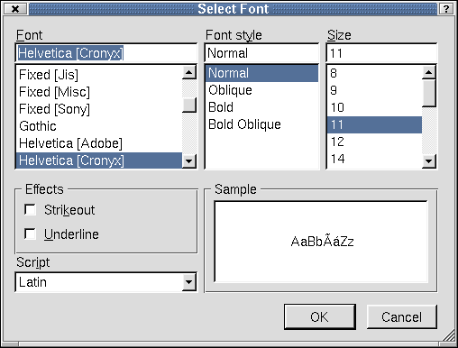
Select Font
The Select Font dialog is used to make changes to the font size and style.
Click the 'Font' listbox to choose a font type. The current selected type appears in the line edit above the 'Font' listbox. Click the 'Font Style' listbox to choose a style for the font. The choices available in the listbox are limited to the type of font you choose. Not all fonts have all styles available. The selected style appears in the line edit above the 'Font Style' listbox. Click the 'Size' listbox to choose a size for the font. The current selected size appears in the line edit above the 'Size' line edit. Click the checkboxes in the 'Effects' section to create a 'Strikeout' or 'Underline' effect for the selected font. Click the 'Script' and choose a style of writing. View your font selections and styles in the 'Sample' listbox.
Click OK to accept changes to the font. Click Cancel to leave the dialog without making any changes to the font.
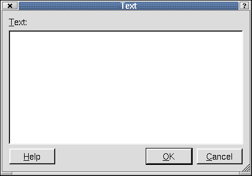
Text Dialog
The Text dialog is used to type text.
Click OK to accept the text. Click Cancel to leave the dialog without saving any text.
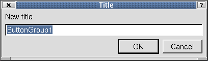
Title Dialog
Use this dialog to change the title of a selected widget by typing the new title in the line edit.
Click OK to accept changes to the title. Click Cancel to leave the dialog without making changes to the title.
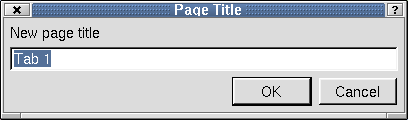
Page Title Dialog
Right click a tab widget on the form and select Edit Page Title to invoke the Page Title dialog. Use this dialog to change the name of each tab in the Tab widget.
Click OK to accept new page titles. Click Cancel to leave the dialog without making any changes.
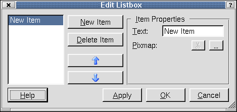
Edit Listbox
Right click or double click a Listbox on the form and select 'Edit' to invoke the Edit Listbox dialog. Use this dialog to add items to the list box and to change the item's properties.
To add an item to the listbox, click the New Item. If you want to change the default name of the item, click the 'Text' line edit in the 'Item Properties' section and type a new name for the item. Click the Select a Pixmap to invoke the Choose an Image Dialog. Click a pixmap and then click the Delete Pixmap button to delete the selected pixmap. To delete an item from the listbox, click the item and then click the Delete button. To move an item up or down in the listbox, click the Move Up or Move Down buttons. Click Apply to accept the changes.
Click Apply to accept changes to the listbox widget. Click OK to leave the dialog once the changes have been accepted. Click Cancel to leave the dialog without saving any changes.
Right click or double click a listview widget on the form and select 'Edit' to invoke the Edit Listview dialog. Use this dialog to add items to the listview. The Edit Listview dialog has two tabs, one for items and one for columns.
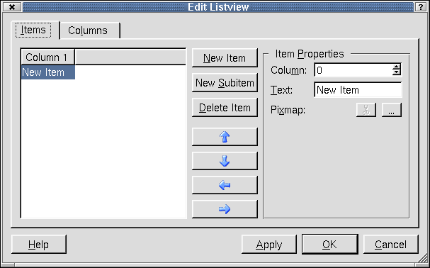
Edit Listview- Items Tab
The dialog defaults to the Items tab. Use this tab to add, change, or remove items in the listview. To add a new item, click the New Item button. The new item is shown at the top of the listbox. To add sub-items to an existing item, click the item and then click the New Subitem button. Click the 'Column' spinbox to choose a column for which the item text or pixmap will be placed. Click the 'Text' line edit to type text for a column, or to change the name of an item or subitem. Click a pixmap and then click the Delete Pixmap button to delete the selected pixmap. To delete an item from the listbox, click the item and then click the Delete button. To move an item up or down within the hierarchy level, click the Move Up or Move Down buttons. To move an item up or down one level, click the Move Left or Move Right buttons.
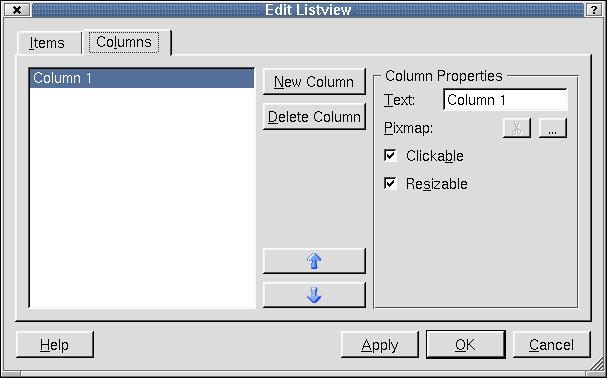
Edit Listview- Columns Tab
Click this tab to change the column configuration of the listview. To add a column, click the New Column button. The new column is shown at the top of the listbox. To change the column name, click a column in the listbox and then click the 'Text' line edit and type a new name. To add a pixmap, click the (ellipsis) button, which invokes the Choose an Image Dialog. To remove a pixmap, click the Delete Pixmap button. Click the 'Clickable' checkbox if you want the columns to respond to mouse clicks. Click the 'Resizeable' checkbox if you want to be able to change the column's width. To remove a column, click the column in the listbox and then click the Delete Column button. To move a column up or down in the listbox, click the Move Up or the Move Down buttons.
Click Apply to accept changes to the listview widget. Click OK to leave the dialog once the changes have been accepted. Click Cancel to leave the dialog without saving any changes.
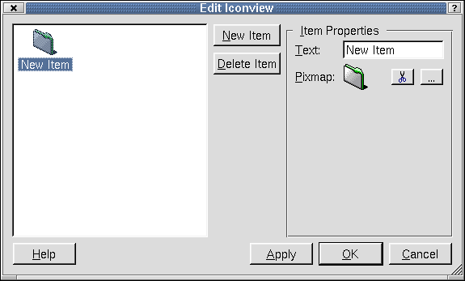
Edit Iconview
Right click or double click an iconview widget on the form and select 'Edit' to invoke the Edit Iconview dialog. Use the dialog to add, change, or remove items from the iconview. To add an item to the iconview, click the New Item button. To change the name of the item, click the 'Text' line edit and type a new name. To add a pixmap, click the (ellipsis) button, which invokes the Choose an Image Dialog. To remove a pixmap, click the Delete Pixmap button. To delete an item from the iconview, click the item and then click the Delete Item button.
Click Apply to accept changes to the iconview widget. Click OK to leave the dialog once the changes have been accepted. Click Cancel to leave the dialog without saving any changes.
Right click or double click a table widget on the form and select 'Edit' to invoke the Edit Table dialog. Use the dialog to add, change, or remove columns or rows from the table.
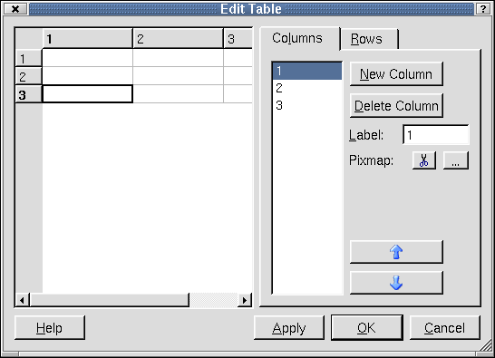
Edit Table- Columns Tab
To add a column to the table, click the New Column button. To delete a column from the table, click the column you want to delete from the table, or click the column number in the 'Columns' listbox and then click the Delete Column button. To change a column name, click the 'Label' line edit and type the new text. To add a pixmap, click the (ellipsis) button, which invokes the Choose an Image Dialog. To remove a pixmap from the current column of the selected item, click the Delete Pixmap button. To move a column in the listbox, click the Move Up or Move Down buttons.
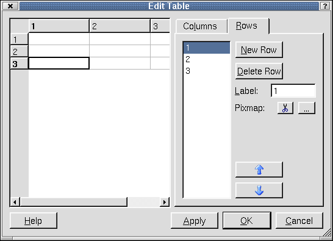
Edit Table- Rows Tab
To add a row to the table, click the New Row button. To delete a row from the table, click the row you want to delete from the table, or click the row number in the 'Rows' listbox and then click the Delete Column button. To change a row's name, click the row, or the row number, and then click the 'Label' line edit and type the new text. To add a pixmap, click the (ellipsis) button, which invokes the Choose an Image Dialog. To remove a pixmap from the current row of the selected item, click the Delete Pixmap button. To move a row in the listbox, click the Move Up or Move Down buttons.
Click Apply to accept changes to the table widget. Click OK to leave the dialog once the changes have been accepted. Click Cancel to leave the dialog without saving any changes.
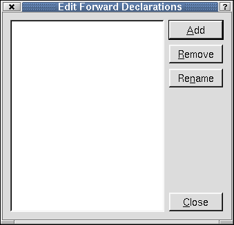
Edit Forward Declarations
From the Source tab in the Object Explorer Window, right click the 'Forward Declarations' folder and select 'Edit' from the context menu to invoke the Edit Forward Declarations dialog. Use this dialog to add, edit, or remove declarations in the source code.
To add a new declaration, click the Add button. A line edit will appear for you to type the declaration. Press Enter after you have typed the declaration. To delete a declaration from the listbox, click the declaration and then click Remove. To rename an existing declaration, click the declaration and then click Rename. The cursor will appear in the line edit, allowing you to change the name.
Click Close to leave the Edit Forward Declarations dialog.
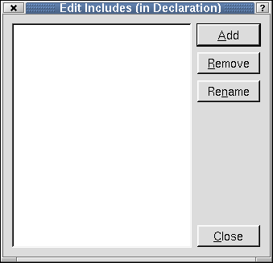
Edit Includes (in Declaration)
From the Source tab in the Object Explorer Window, right click the 'Includes (in Declaration)' folder and select 'Edit' from the context menu to invoke the Edit Includes (in Declarations) dialog. Use this dialog to add, edit, or remove includes in the source code.
To add a new include, click the Add button. A line edit will appear for you to type the include. Press Enter after you have typed the include. To delete an include from the listbox, click the include and then click Remove. To rename an existing include, click the include and then click Rename. The cursor will appear in the line edit, allowing you to change the name.
Click Close to leave the Edit Include (in Declaration) dialog.
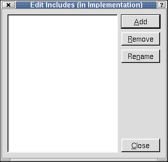
Edit Includes (in Implementation)
From the Source tab in the Object Explorer Window, right click the 'Includes (in Implementation)' folder and select 'Edit' from the context menu to invoke the Edit Includes (in Implementation) dialog. Use this dialog to add, edit, or remove includes in the source code.
To add a new include, click the Add button. A line edit will appear for you to type the include. Press Enter after you have typed the include. To delete an include from the listbox, click the include and then click Remove. To rename an existing include, click the include and then click Rename. The cursor will appear in the line edit, allowing you to change the name.
Click Close to leave the Edit Include (in Implementation) dialog.
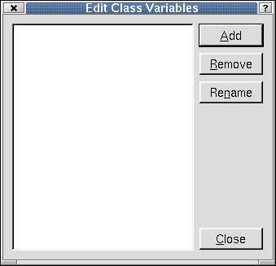
Edit Class Variables
From the Source tab in the Object Explorer Window, right click the 'Class Variables' folder and select 'Edit' from the context menu to invoke the Edit Class Variables dialog. Use this dialog to add, edit, or remove class variables in the source code.
To add a new variable, click the Add button. A line edit will appear for you to type the variable. Press enter after you have typed the variable. To delete an include from the listbox, click the variable and then click Remove. To rename an existing variable, click the variable and then click Rename. The cursor will appear in the line edit, allowing you to change the name.
Click Close to leave the Edit Class Variables dialog.
[Prev: Reference: Toolbar Buttons] [Home] [Next: Reference: Wizards]
| Copyright © 2002 Trolltech | Trademarks | Qt version 3.0.5
|